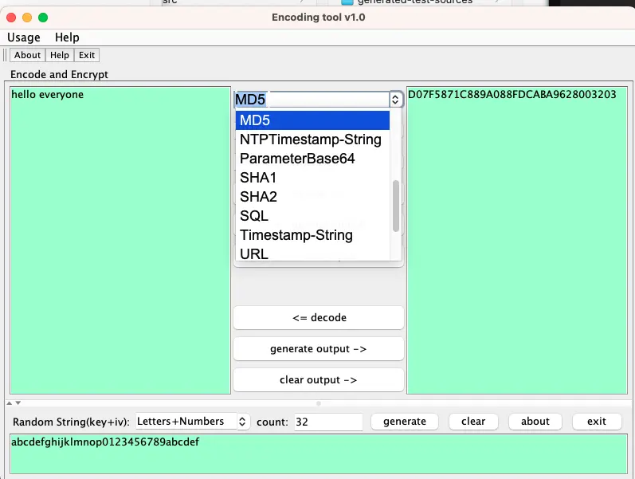

编码转换助手
Posted on Thu 30 May 2024 in Journal
| Abstract | 编码转换助手 |
|---|---|
| Authors | Walter Fan |
| Category | tool |
| Status | v1.0 |
| Updated | 2024-05-30 |
| License | CC-BY-NC-ND 4.0 |
Encoding Helper 是一个由 开发的小型图形用户界面（GUI）工具，用于进行编码转换。该工具提取自旧代码仓库，并重新打包为独立工具，方便用户进行各种编码和解码操作。

主要功能包括：
转换功能
- 数字进制转换：10进制-16进制、10进制-2进制
- 编码解码：Base64、Hex-Ascii、Hex-Base64、HTML、SQL、URL、XML、Zip-Base64
- 时间戳与字符串转换
- 本地字符串与ASCII字符串转换
校验功能
- CRC32 计算
- MD2、MD5、SHA1、SHA2 哈希计算
生成功能
- UUID 生成
- 随机字符串生成
加密功能
- AES 加密/解密（支持多种模式和填充方式）
使用此工具，用户可以简便地进行各种编码转换和加密解密操作，非常适合需要频繁处理不同编码的开发人员和工程师。
使用技术
- Java Swing：用于构建跨平台的图形界面。
- really-executable-jar-maven-plugin：生成可直接执行的 Jar 文件。
- launch4j：创建 Windows 平台的可执行文件（.exe）。
此工具简化了编码转换和加密操作，特别适合开发人员和工程师
编译和执行步骤
1. 准备工作
确保您的系统已安装以下软件： - Java Development Kit (JDK) 1.8 或更高版本 - Apache Maven 3.6.0 或更高版本
2. 克隆项目
首先，克隆项目到本地机器：
git clone https://github.com/walterfan/encoding_helper.git
cd encoding_helper
3. 使用 Maven 编译项目
运行以下命令来编译项目：
mvn clean install
这将会下载所有依赖并构建项目，生成一个可执行的 JAR 文件。
4. 生成平台特定的可执行文件
项目使用了 really-executable-jar-maven-plugin 和 Launch4j 插件来生成特定平台的可执行文件。
-
生成可执行 JAR 文件：
sh mvn package生成的 JAR 文件位于target/encoding_helper-1.0-SNAPSHOT.jar。 -
生成 Windows 可执行文件 (.exe)：
sh mvn launch4j:launch4j生成的 Windows 可执行文件位于target/encoding_helper.exe。
5. 运行应用程序
- 运行可执行 JAR 文件：
sh java -jar target/encoding_helper-1.0-SNAPSHOT.jar - 运行 Windows 可执行文件：
双击
target/encoding_helper.exe文件。
项目目录结构
src/main/java：Java 源代码。src/main/resources：资源文件，如配置文件。target：编译输出目录，包括生成的 JAR 文件和可执行文件。
依赖管理
项目的依赖由 Maven 管理，主要依赖包括：
- javax.swing：用于创建图形用户界面。
- commons-codec：用于编码和解码操作。
插件配置
- really-executable-jar-maven-plugin：用于生成可以直接执行的 JAR 文件。
- Launch4j：用于将 JAR 文件打包成 Windows 可执行文件。
有关详细的插件配置，请参考 pom.xml 文件中的插件配置部分。
通过以上步骤，您可以轻松地编译和运行编码助手 (Encoding Helper) 项目。如果需要更多信息或遇到问题，请访问项目的 GitHub 仓库。
本作品采用知识共享署名-非商业性使用-禁止演绎 4.0 国际许可协议进行许可。